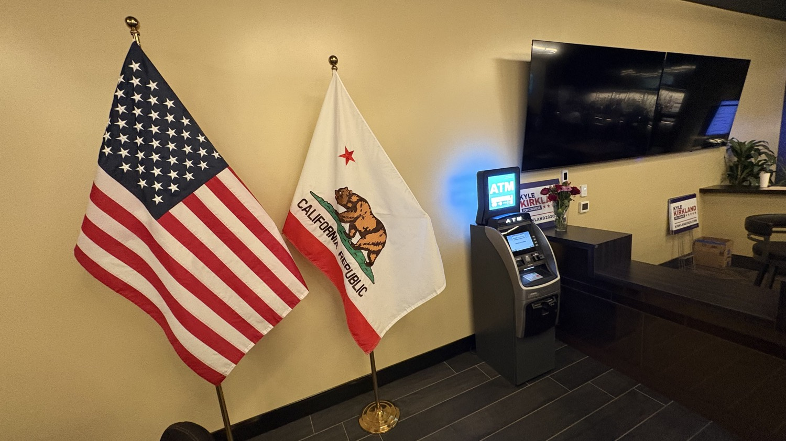
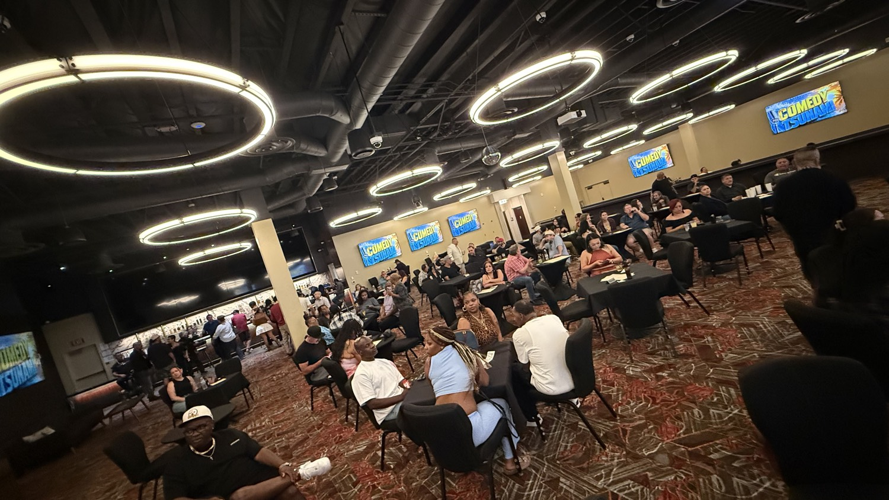
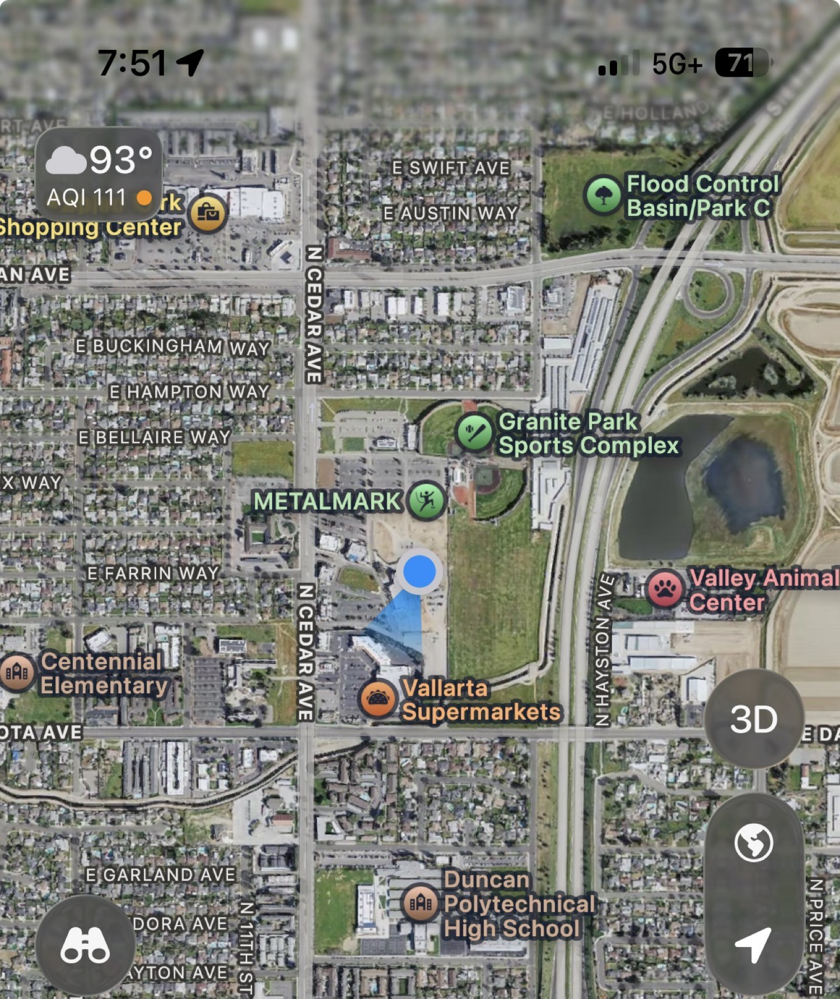
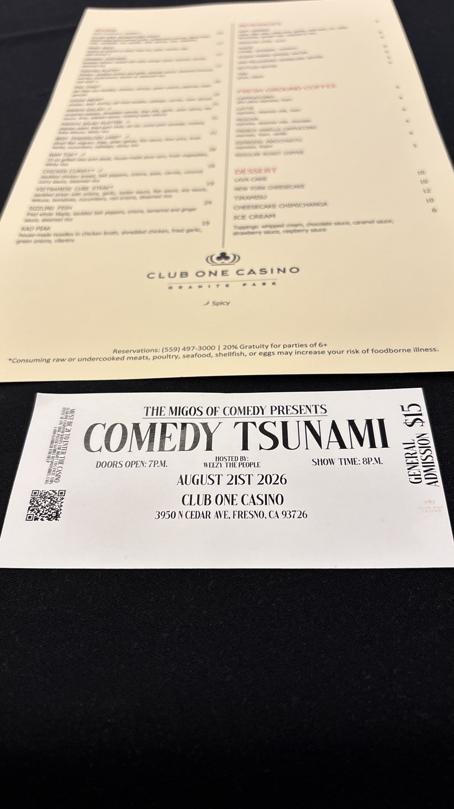

Last night at Club One Casino in Granite Park, the Comedy Tsunami show filled the room under the circular lights. Campaign signs for Kyle Kirkland stood near the American and California flags. The same building that employs hundreds of Fresno workers and sends over a million dollars a year in table fees to the City of Fresno is also the home base of a man who just helped deliver a decisive legal victory for California’s card rooms.

The Business
Owner and General Manager of Club One Casino (51 tables, relocated to Granite Park). Also operates additional card rooms. Employs 200+ people. Pays roughly $1 million annually in local table fees and taxes.
The Industry Role
President of the California Gaming Association, the trade group representing the state’s licensed card rooms — an industry that generates billions in economic activity and hundreds of millions in tax revenue for cities.
The Court Win
In 2026, a San Francisco Superior Court judge ruled that Attorney General Rob Bonta and the Bureau of Gambling Control exceeded their authority with regulations that would have banned blackjack and heavily restricted player-dealer games. Preliminary injunction followed by a final ruling protecting the industry.
Community Work
Founder of the Kirkland Foundation (animal rescue, thousands of animals helped). Board Chair of the Fresno Chaffee Zoo Corporation. Major donor to the Zoo’s Centennial Campaign. Longtime advocate against high euthanasia rates in the Valley.
The Overreach and the Win
Attorney General Rob Bonta’s regulations, set to take effect in April 2026, would have outlawed blackjack-style games at state-licensed card rooms and imposed new rotation and operational rules on player-dealer games. Industry analysis and the state’s own economic review projected severe impacts: potential loss of more than half of card-room revenue, thousands of jobs statewide, and significant hits to the local tax bases that fund public safety and city services.
Kirkland, speaking as both Club One operator and California Gaming Association president, called the rules the most disruptive he had seen in two decades. He and the association argued that the Attorney General lacked statutory authority to rewrite decades of settled practice, that proper notice and process were not followed, and that the regulations were driven by political pressure rather than public-safety findings.
The courts agreed. A preliminary injunction paused enforcement. Later rulings held that Bonta had exceeded his authority. The practical result: blackjack and the core player-dealer games continue at Club One and across the state. Jobs stay. The roughly one million dollars a year that Club One contributes to Fresno’s general fund stays on the table. That is a concrete win for working families in this region.

What Kind of Public Figure
Kyle Kirkland is not a career politician. He built and sold businesses, served as Chairman of Steinway Musical Instruments for years, and then put capital and operational energy into Fresno’s card room. He has kept the doors open through bankruptcy proceedings years ago, through the COVID shutdown, and through the latest regulatory assault. The business pays its people and its city obligations.
Beyond the tables, he founded the Kirkland Foundation to attack the Central Valley’s high euthanasia rates for cats and dogs. He chairs the board that operates the Fresno Chaffee Zoo and has made large personal commitments to its future. Those are not campaign talking points invented yesterday. They are documented patterns of work.
He is currently the Republican candidate advancing in California’s 21st Congressional District race, challenging longtime incumbent Jim Costa. He previously tested the waters in the 20th District special election. He shows up, raises money, and makes the case that business experience and results matter more than seniority.

Why This Matters Here
Some of us in the High Tower District have looked at local races — including City Council — and felt the weight of what it costs to put your name on a ballot. The aggression, the organized pressure, the personal risk. Kyle Kirkland stepped into the larger arena of a congressional race and, more immediately, into a multi-year legal and political fight against the state’s highest law-enforcement office. He did not fold. The court record shows the outcome.
That is the kind of public figure worth noting. Not because every policy position will match every voter’s preference, but because the pattern is clear: he builds things, he keeps people employed, he fights when the rules are rewritten against local businesses without clear legal footing, and he puts real money and time into animal welfare and the Zoo that belongs to this community.
Supporting that record is straightforward. Congratulations to Kyle Kirkland and the California Gaming Association for the court victory that protected Fresno jobs and local revenue. The fight was expensive in time, legal fees, and uncertainty. The result is real.

A Final Note from the District
It has become so out of control that a person considering a run for Fresno City Council has to weigh the possibility of death threats. Those are my observations and opinions. The pressure appears to come from organized actors who want to lock down District 3 in order to protect and expand the flow of federal funds for programs labeled “homeless” services. In practice, many of the people cycling through those systems are not simply unhoused. A visible share are methamphetamine-addicted career criminals who learn the template: commit low-level public-order offenses (including conduct covered under Penal Code 647 and related municipal ordinances near bars and entertainment districts), then return to the same patterns once the immediate enforcement passes. This pattern is observable in California municipalities that still have active nightlife. These are facts on the ground for anyone who walks the same streets after dark.
Kyle Kirkland is not running for District 3. He is running for Congress. But the same principle applies: people who actually operate businesses, meet payrolls, and fight in court when the state overreaches are the ones who keep the economic foundation from collapsing. Supporting that kind of figure is not complicated.
High Tower District view
Congratulations again to Kyle Kirkland. The court win against the Bonta regulations protected real Fresno paychecks and real city revenue. That is the record. The rest is for voters to weigh in November.
Sources & Further Reading
- • California Gaming Association / Kyle Kirkland statements on the Bonta regulations and court rulings (2026)
- • San Francisco Superior Court proceedings on the California Gaming Association challenge to Bureau of Gambling Control regulations (preliminary injunction May 2026; further rulings June–July 2026)
- • Club One Casino public materials and local reporting on employment and table-fee contributions to the City of Fresno
- • Kirkland Foundation and Fresno Chaffee Zoo Corporation records regarding animal welfare work and Centennial Campaign gifts
- • Official campaign site: kirkland2026.com (CA-21)
- • Contemporary local reporting from Fresno Bee, GV Wire, YourCentralValley, and industry outlets on the card-room regulatory fight
This story reflects documented public facts about Kyle Kirkland’s business, legal, and civic activities, combined with the author’s direct observations from Club One Casino on the evening of August 21, 2026, and the author’s own opinions regarding local political conditions. Readers should verify primary sources.